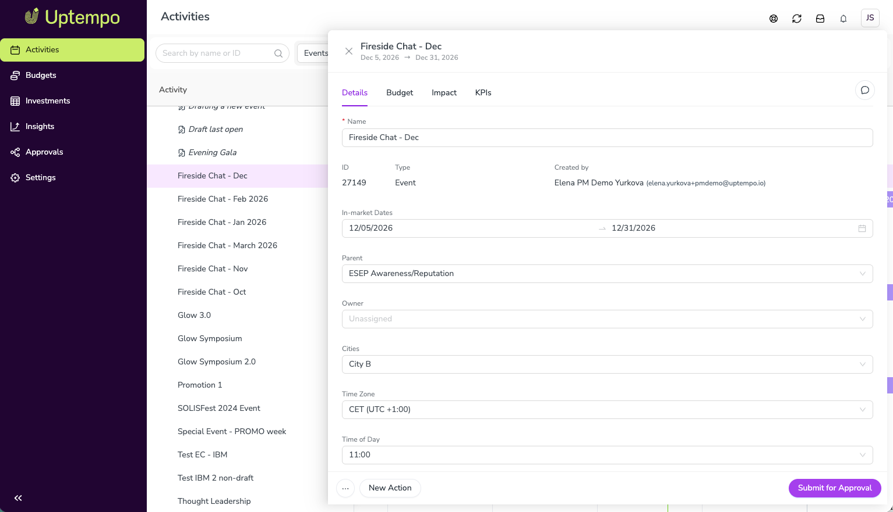
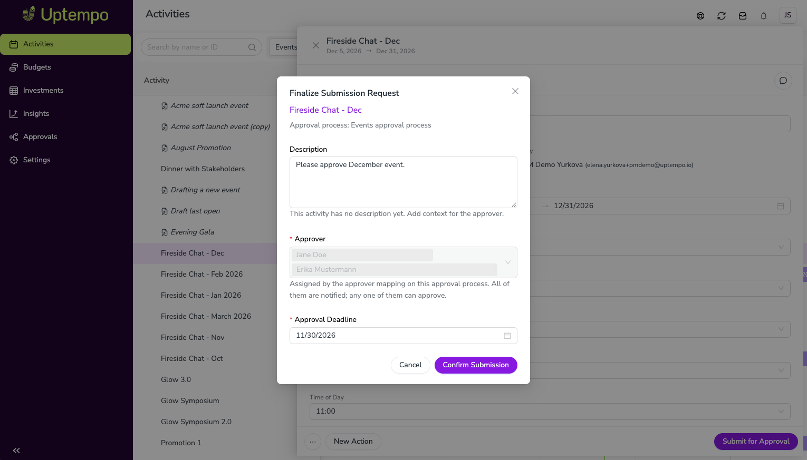

Submit activities for approval
You can submit an activity for approval when its activity type is covered by an active approval process. Each submission creates an approval request that the assigned approvers review on the Approvals page.
Before you begin
Activity approvals must be enabled in your Uptempo instance. This feature is in Preview; contact your Customer Success Manager to enable it.
The activity's type must be covered by an active approval process. If Submit for Approval isn't shown on an activity, its type isn't covered; contact your Campaign Management admin.
The activity can't already have an approval request. If its request was denied, resubmit it instead (see the section on resubmitting after a denial).
How submission works
Who reviews your request
The approval process for the activity type decides who reviews your request:
- Submitter-to-approver mapping
Your approvers are assigned automatically and listed for you when you submit. You can't change them. Any one of them can approve or deny the request. If you aren't listed in the mapping, your request goes to the process's default admin.
- Selected by submitter
You choose one approver when you submit. You can choose only users who can edit the activity.
Request description
The request description starts with the activity's own description. You can add more context for your approvers, such as what you need approved and why. Approvers see the description on the Approvals page.
After you submit
The request has the status Pending review, and your approvers get an email.
The activity shows who the request is waiting on and its due date, and Submit for Approval is unavailable.
You can keep editing the activity while the request is pending. The approval covers the activity as it stands when the decision is made.
Submit an activity for approval
Submit an activity for approval
In the
 Activities section, click the activity you want to submit to open its details panel.
Activities section, click the activity you want to submit to open its details panel.At the bottom of the details panel, click Submit for Approval.

The Finalize Submission Request dialog opens.
Review the activity name and the approval process shown at the top of the dialog.
Review the Description. It starts with the activity's description; add any context your approvers need.
Set an Approval Deadline (required). The deadline can't be in the past.
Review the Approver field:
Submitter-to-approver mapping: Your approvers are listed and can't be changed. All of them are notified, and any one of them can approve.
Selected by submitter: Select an approver (required).

Click Confirm Submission.


Your request is submitted with the status Pending review, and your approvers are notified by email.
Track your request
You can check the status of your request in two places:
On the activity: While the request is pending, the activity shows "Waiting for approval from" the assigned approvers and the due date. After approval, the activity shows that it's approved.
On the Approvals page: Find your request on the Pending review, Approved, or Denied tab. Click the request to open its details, including its history and any approver comments.
Resubmit after a denial
If your request is denied, check the approver's comment in the request history, update the activity, and resubmit the request. Each activity has only one approval request, so resubmitting reopens the same request for review.